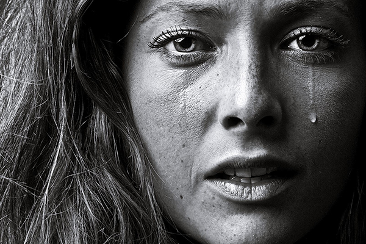
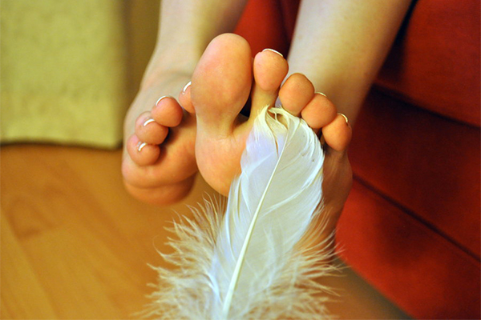
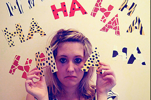

Keď plačeme od šťastia, prvá slza výjde z pravého oka. Keď od smútku, z ľavého
Typ hudby ktorú počúvate vie ovplyvniť spôsob akým vnímate svet

Pteronofóbia je strach zo šteklenia pierkom
Cherofóbia je strach zo zábavy alebo šťastia

Čím viac sa sústredíte aby ste zaspali tým je menšia pravdepodobnosť že zaspíte
Priateľstvá vytvorené keď máte 16 - 28 rokov budú silnejšie a dlhšie ako ostatné
Ľudia ktorý dávajú najviac rád sú väčšinou ľudia s najviac problémami
Keď sa držíte za ruky s osobou ktorú ľúbite, menej sa trápite